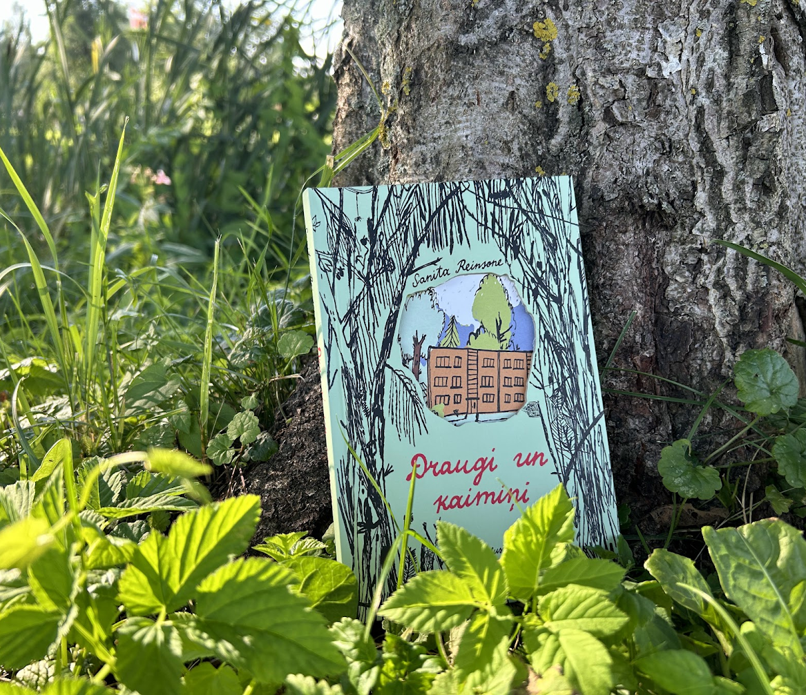

Bērnu literatūra
Draugi un kaimiņi

"Draugi un kaimiņi" ir delverīgs pieaugšanas stāsts, kura darbība norisinās kādā Latvijas mazpilsētā 20. gadsimta deviņdesmito gadu sākumā. Labākās draudzenes, gadus desmit vienpadsmit vecas meitenes, brīvo laiku labprāt pavada pļavas nostūrī zem lielā vītola zariem – Džungļos. Tā ir gan interesanta vieta rotaļām, gan patvērums brīžos, kad dzīve mājās kļūst neizturama. Pilsētas vadība iecerējusi Džungļu vietā būvēt fabriku. Džungļi jāglābj! Glābšanas misija izvēršas ne gluži kā paredzēts, taču tās laikā draudzenes iepazīst ne tikai savus kolorītos kaimiņus, bet daudz vairāk uzzina arī par sevi.
Aleksandras Rundes ilustrācijas ar rotaļīgām līnijām, divkrāsu paleti un izteiksmīgajiem tēliem ir izcils un spilgts papildinājums stāstam, kas dzīvelīgi ataino agrīno deviņdesmito gadu sajūtu.
Grāmatu var iegādāties Jāņa Rozes grāmatnīcā.
Apbalvojumi un nominācijas
"Latvijas literatūras gada balva 2025" kategorijā "Labākais literatūras autordarbs bērniem latviešu valodā"
LSM.LV lasītāju balva 2025. gadā
Nominācija Starptautiskajai Jāņa Baltvilka balvai bērnu un jauniešu literatūrā 2025. gadā
Iekļauta Bērnu, jauniešu un vecāku žūrijas 2025. gada kolekcijā (9+ kategorijā)


Ilustrācijas: Aleksandra Runde